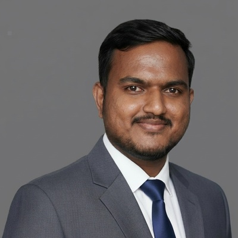

Available — Berlin, Germany · MSc Data Science 2026Data Analyst · Analytics Engineer · ML Engineer
3+ years at Tata Consultancy Services delivering enterprise analytics for CFO & CHRO stakeholders. 70+ Power BI dashboards in production. Pipeline latency cut 98% on 1.5M daily records. Now finishing MSc Data Science in Berlin — open to full-time & Werkstudent roles.
Data professional with a rare combination: 3+ years of enterprise analytics delivery at TCS plus hands-on ML engineering. I've shipped 70+ dashboards consumed daily by CFOs and CHROs, rebuilt ETL pipelines that process 1.5M records a day, and led a team with zero critical production incidents.
Currently finishing my MSc in Data Science at University of Europe for Applied Sciences in Berlin, with research on GNN architectures for building energy forecasting. PL-300 certified, pursuing DP-600. English fluent, German B1.
Open to Full-time · Werkstudent
| Location | Berlin, Germany |
| Phone | +49 152 137 870 99 |
| suhasvenkat265@gmail.com | |
| Degree | MSc Data Science, 2026 |
| Cert | Microsoft PL-300 |
| Languages | English (Fluent), German (B1) |
| GitHub | github.com/suhasvenkat |
| in/suhas-venkat | |
| Status | Available |
MSc thesis comparing LSTM, Transformer, GNN, and SSL architectures for building energy forecasting on the ASHRAE dataset (1,000+ buildings). GCN outperformed temporal models at aggregate forecasting. SSL pretraining significantly improved robustness under sensor-failure scenarios.
Production-grade AI email triage system with LangGraph workflow orchestrating intent classification across 5 categories, FAISS semantic search achieving 80%+ precision, sub-200ms inference, AI response generation, and confidence-based human escalation.
88% accuracy on 40,000 X-ray images. Fine-tuned ResNet-50 with custom augmentation pipeline including rotation, flipping, and contrast normalization. Deployed as real-time Streamlit application.
End-to-end ELT pipeline using medallion architecture (bronze/silver/gold). AWS S3 → Snowflake ingestion → dbt Core transformations with SCD Type 2 slowly changing dimensions and comprehensive dbt test coverage for data quality.
Production pipeline with Airflow orchestration achieving <200ms latency. Fully containerised with Docker Compose. CSV ingestion → Airflow DAG → PostgreSQL with FastAPI serving layer.
200+ problems solved covering arrays, trees, graphs, dynamic programming, and advanced SQL. Consistent practice in Python with focus on optimal time and space complexity.
Download Resume — Tailored by Role
Experience
Education
Certifications & Achievements
Full Tech Stack
Suhas consistently delivered outstanding results. His ability to translate complex data into clear, actionable insights made him indispensable. He reduced our reporting time by 98% — the dashboards he built are still in production today.
I've managed many analysts, but Suhas stands out. He understands the business problem first. When he identified revenue gaps through cohort analysis, leadership immediately took action. He's earned every A-band rating.
Working with Suhas was a masterclass in data analytics. His SQL optimization skills are exceptional — he turned a 3-hour ETL job into a 3-minute one. Any company would be lucky to have him.
Suhas led our team with calm and clarity. He built 70+ dashboards without a single critical incident. His semantic models standardized KPIs across 4 business units — something we'd struggled with for years.
Suhas brought energy and innovation to everything he touched. His automation scripts saved us 500+ engineering hours per year. He's the rare analyst who can talk to executives and write production code.
Open to full-time roles, Werkstudent positions, and research collaborations in Berlin (and remote). Response time <24 hours.